算法及API介绍
Introduction
This is a Vehicle Routing Problem solver compatible for a range of VRP variants. We introduced a new form of Hybrid Genetic Algorithm and it was finetuned to fit CVRP in this repo, and performs well on Capacitated VRP Instances. Below are some tricks we employed in the algorithm.
- We introduced an innovative genetic coding method, which is compatible with a range of VRP variants.
- We employed Variable Neighborhood Search after every generation of Genetic Algorithm to accelerate the convergence rate.
- There are 4 populations which evolve concurrently, and they swap a proportion of good genes every few generations.
Hybrid Genetic Algorithm
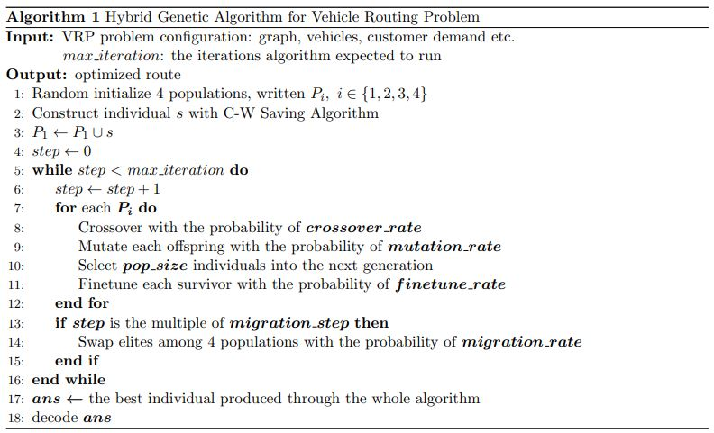
Genetic Coding
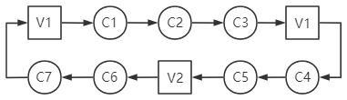
The chromosome is a loop consisting of both vehicle and customer genes, shown above, where Vx represents a vehicle of type x and Cx a customer with ID x.
Thus, the route in this chromosome decodes as:
Route1(with Vehicle Type-1): depot -> customer1 -> customer2 -> customer3 -> depotRoute2(with Vehicle Type-1): depot -> customer4 -> customer5 -> depotRoute3(with Vehicle Type-2): depot -> customer6 -> customer7 -> depot
Initialize
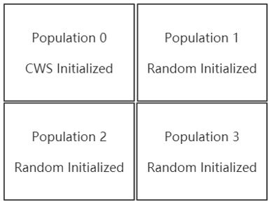
All four populations are initialized randomly, except for a Clark-Wright Saving constructed super individual pushed into population 0. Each population takes up a geographical position, as illustrated above, according to which migration will take place.
Crossover
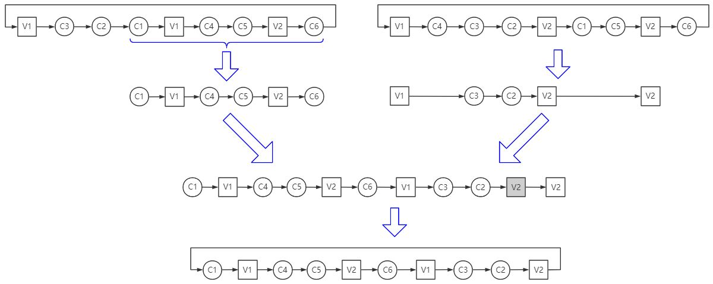
Offsprings are reproduced with the crossover operator. Specification is commented below.
- Randomly choose 2 individuals, written P1(left-hand side) and P2(right-hand side).
- For P1, a gene fragment is sliced randomly, written S1. And we obtain S2 by removing all the customers appear in S1 from P2.
- concatenate the two fragment S1 and S2.
- Remove spare vehicles which have no customer to serve.
Mutate
We designed two kinds of mutation operators, which are customer-base and vehicle-based. Illustrations are better than explanation.
Customer-Based Mutate
Swap
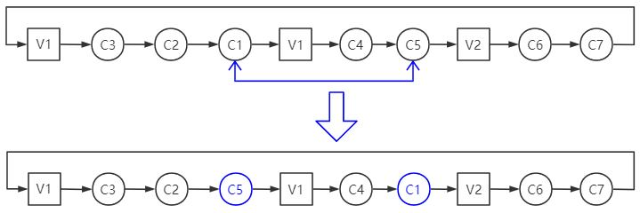
Shift
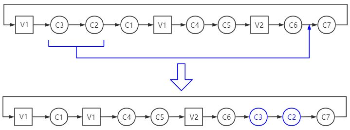
Reverse
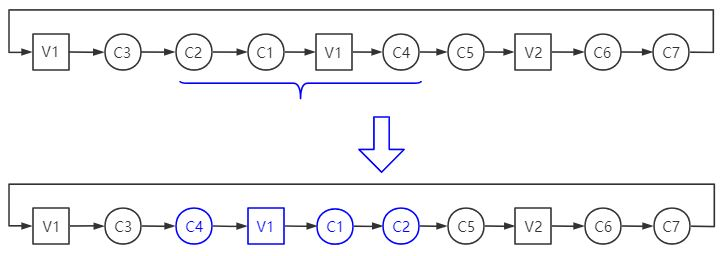
Vehicle-Based Mutate
Change
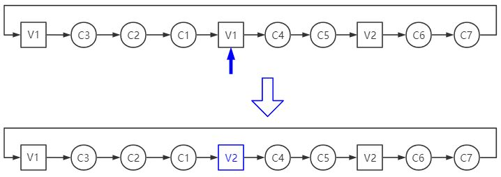
Insert
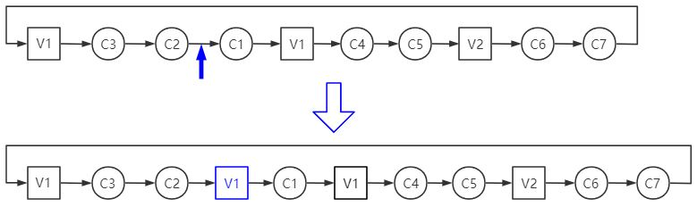
Remove
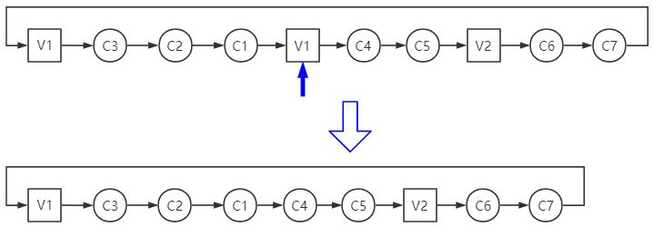
Select
We select the top eliteRate individuals which have the highest fitness directly to the next generation. And for the remains, simulated-annealing like method is applied, which is to keep the good individual and to accept relatively bad individual with a proper probability.
Finetune
We randomly perform swap, shift, reverse and remove many times to search the neighbor of a chromosome with the probability of finetuneRate for it is a heavily time-consuming operation. It drastically enhenced the performance of the algorithm.
Migrate
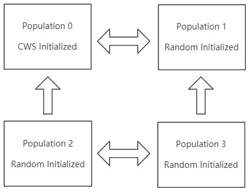
Migration is applied every 15 generations. The migration between Populaiton 0 and 1, 2 and 3 is bidirectional, whereas between Population 0 and 2, 1 and 3 is one-way. This direction constraint ensures that the super individual in Population 0 will not contaminate the whole species.
Experiment
Interface
input through stdio
xxxxxxxxxx<num_of_customer><node_id> <demand> <service_time> <tw_beg> <tw_end>...<num_of_depot><node_id>...<num_of_other><node_id>...<num_of_edge><u> <v> <w>...<num_of_vehicle><veh_id> <depot> <load> <mileage> <count>...<distancePrior> <timePrior> <loadPrior><num_of_population> <pop_size> <max_iter>
The first line is an integer denotes the number of customers.
input through node.js interface
xxxxxxxxxx{"nodes": [{"id":0, "type":"depot"},{"id":1, "type":"customer", "demand":1.7, "service_time":5./60},{"id":2, "type":"customer", "demand":2, "service_time":5./60,"tw_beg":1, "tw_end":2},{"id":3, "type":"other"},// ...],"edges": [{"u": 0, "v": 1, "w": 5},{"u": 0, "v": 2, "w": 8},// ...],"speed": 10,"work_time": 8,"vehicles": [{"id": 1, "depot": 0, "load": 2, "mileage": 35},{"id": 2, "depot": 0, "load": 5, "mileage": 35},// ...],"distancePrior": 5,"timePrior": 1,"loadPrior": 4}
Benchmark
We tested our algorithm on Capacitated VRP Instances. We set distancePrior=1, timePrior=0, loadPrior=0 in order to minimize the distance. Below are the result with 200 generations.
| Dataset | Benchmark / km | Distance / km | Error | Time / s |
|---|---|---|---|---|
| P-n16-k8 | 450 | 451.34 | 0.2% | 0.210 |
| A-n33-k5 | 661 | 697.16 | 5.5% | 0.333 |
| A-n45-k6 | 944 | 986.90 | 4.5% | 0.456 |
| A-n60-k9 | 1408 | 1410.70 | 0.2% | 0.637 |
| A-n80-k10 | 1764 | 1869.12 | 6.0% | 0.761 |
| E-n101-k14 | 1071 | 1133.16 | 5.8% | 1.035 |
| M-n200-k17 | 1373 | 1402.27 | 2.1% | 1.911 |
And the result with 2000 generations.
| Dataset | Benchmark / km | Distance / km | Error | Time / s |
|---|---|---|---|---|
| P-n16-k8 | 450 | 451.34 | 0.2% | 3.519 |
| A-n33-k5 | 661 | 622.26 | 0.2% | 3.868 |
| A-n45-k6 | 944 | 956.78 | 1.4% | 4.651 |
| A-n60-k9 | 1408 | 1407.09 | -0.1% | 6.543 |
| A-n80-k10 | 1764 | 1849.58 | 4.9% | 8.376 |
| E-n101-k14 | 1071 | 1126.62 | 5.2% | 10.591 |
| M-n200-k17 | 1373 | 1385.29 | 0.9% | 21.280 |
References
[1]Lu Zhen,Chengle Ma,Kai Wang,Liyang Xiao,Wei Zhang. Multi-depot multi-trip vehicle routing problem with time windows and release dates[J]. Transportation Research Part E,2020,135.
[2]Diego Cattaruzza,Nabil Absi,Dominique Feillet. The Multi-Trip Vehicle Routing Problem with Time Windows and Release Dates[J]. Transportation Science,2016.
[3]X. Wang, C. Xu and H. Shang, "Multi-Depot Vehicle Routing Problem with Time Windows and Multi-Type Vehicle Number Limits and its Genetic Algorithm," 2008 4th International Conference on Wireless Communications, Networking and Mobile Computing, Dalian, 2008, pp. 1-5.
[4]Mahdi Alinaghian,Nadia Shokouhi. Multi-depot multi-compartment vehicle routing problem, solved by a hybrid adaptive large neighborhood search[J]. Omega,2018,76.
[5]Clarke, G., Wright, J.W., 1964. Scheduling of vehicles from a central depot to a number of delivery points. Operations Research 12 (4), 568–581.